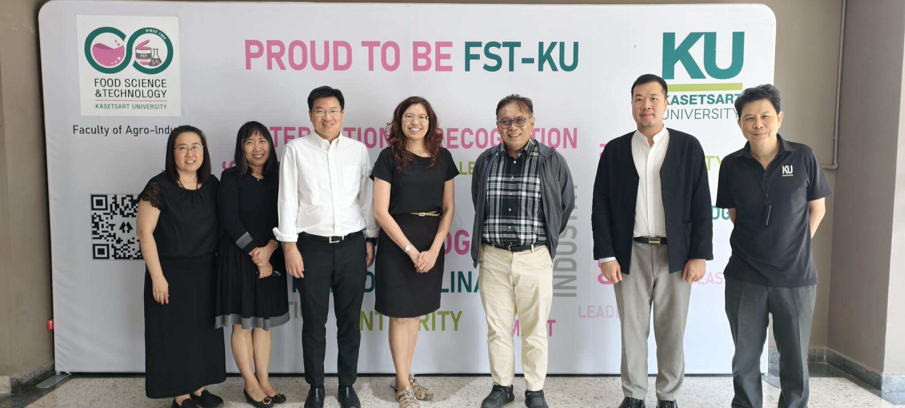

AI-Integrated Food Science and Technology ไม่ได้แทน Food Science แต่เพิ่มมิติการมองเห็นระบบอาหารผ่านข้อมูล
{kind=link}

บทความนี้เล่าการแลกเปลี่ยนกับภาควิชา Food Science and Technology (FST) ในประเด็นความร่วมมือด้าน AI × Food Science โดยย้ำตั้งแต่ต้นว่า นี่ไม่ใช่การเสนอหลักสูตรสำเร็จรูป แต่เป็นการวางกรอบร่วมกัน ระหว่างสองศาสตร์
หัวใจของการคุยคือแนวคิด AI-Integrated Food Science and Technology ที่ไม่ได้แทน Food Science เดิม แต่ต่อยอดความแข็งแรงของเคมีอาหาร จุลชีววิทยา การแปรรูป ความปลอดภัย และคุณภาพ แล้วเชื่อมเข้ากับข้อมูล เซนเซอร์ ระบบการผลิต และ AI อย่างเป็นระบบ
ประเด็นสำคัญของโพสต์นี้คือการยืนยันว่า AI ไม่ได้เข้ามาแทนสาขาหลัก แต่เพิ่ม มิติการมองเห็นระบบอาหารผ่านข้อมูล เพื่อให้การวิเคราะห์ คาดการณ์ ควบคุม และตัดสินใจในโลกจริงทำได้ดีขึ้น
AIEP ในที่นี้คือกรอบที่ให้สาขาเดิมเป็นเจ้าของทิศทาง แล้วเติม AI แบบ optional
การหารือครั้งนี้วางอยู่ภายใต้กรอบ AIEP และนโยบาย ตรี+1 (4+1) ของมหาวิทยาลัย โดยใช้โครงสร้างสาขาเดิมของ FST เป็นฐาน แล้วค่อยเพิ่ม track / module ด้าน AI แบบ optional เพื่อให้ภาคเป็นเจ้าของเนื้อหาและทิศทางทั้งหมด
มุมนี้สำคัญมาก เพราะมันทำให้การบูรณาการไม่ใช่การเอา AI ไปครอบสาขาเดิม แต่เป็นการออกแบบพื้นที่ร่วมที่ยังเคารพความเป็นเจ้าของของแต่ละภาควิชา
ต้นแบบเชิงแนวคิดที่ดี เริ่มจากความเข้าใจซึ่งกันและกันก่อน
ผู้เขียนย้ำชัดว่าสิ่งที่คุยกันยังเป็นเพียง ต้นแบบเชิงแนวคิดสำหรับการระดมสมอง ไม่ใช่ข้อผูกมัดหรือการอ้างอิงเชิงนโยบาย นี่ทำให้บทความมีน้ำหนักในฐานะตัวอย่างของการทำงานข้ามศาสตร์ที่เริ่มจากการสร้างความเข้าใจร่วมก่อน มากกว่าการเร่งประกาศผลลัพธ์
ข้อสรุปจึงตรงมาก: การบูรณาการที่ดีเริ่มจากความเข้าใจซึ่งกันและกัน ก่อนเสมอ และนั่นเองคือเงื่อนไขตั้งต้นของการสร้างอนาคตระบบอาหารที่ปลอดภัย มีประสิทธิภาพ แข่งขันได้ และยั่งยืนบนฐานข้อมูลจริง